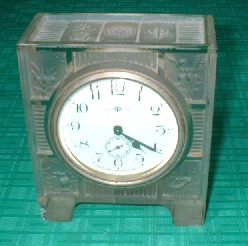
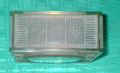
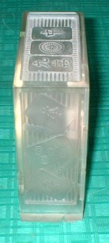
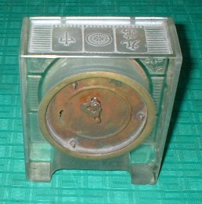

Tile colection 珍奇牌。
（２１）骨董・ガラス時計
大正時代に流入した麻雀は、昭和に入って大流行した。ブームにのって、麻雀牌をあしらった浴衣（ゆかた）、チョッキ、食器などが製造され、販売された。そんな時代、やはりその波に乗って発売されたガラス時計だ。
上面、側面にも麻雀牌があしらってある。高さ13.5cm、横幅11.5cm、奥行き5.3cmと小振りだが、どっしりした作りで結構重い。
現在でも、このようなガラス製枠の時計は販売されている。しかしそれが麻雀牌模様では、商売として成り立つほど売れないと思う。しかし当時は、商売として成り立つと思われたほどの麻雀ブームだった。そういう時代を証明する貴重な資料である。 
裏はTOKYO TOKEI SEIZO KAISYAとメーカー名が刻印されており、時刻を調整するためのポッチと、ネジ巻きがついている。
いまでも完全に動くので、もちろん時計として使用できる。しかし電池式に慣れているので、一定時間ごとにネジを巻くことを忘れてしまう。そこで気がつくと止まっている。そのたびに時計をみては時刻を合わせ、ネジを巻く。というわけで、時刻合わせのために、そばにもう一つ時計を置いてある。（笑）